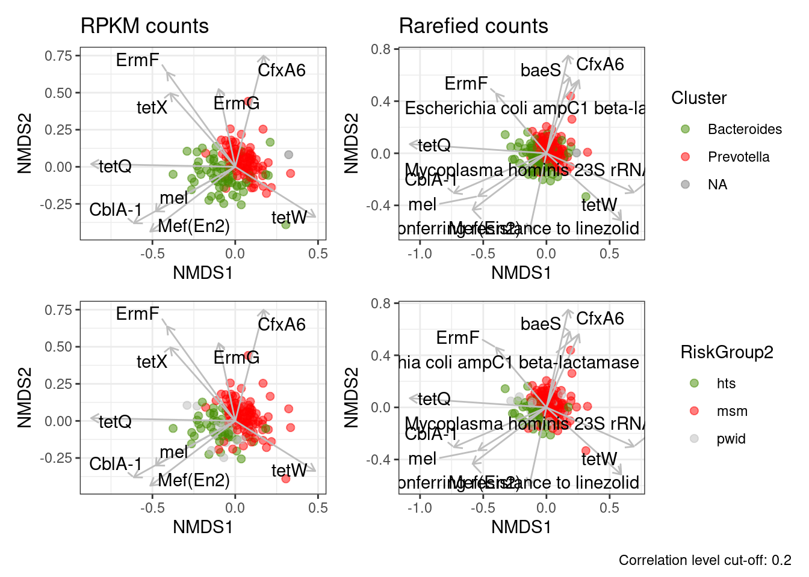
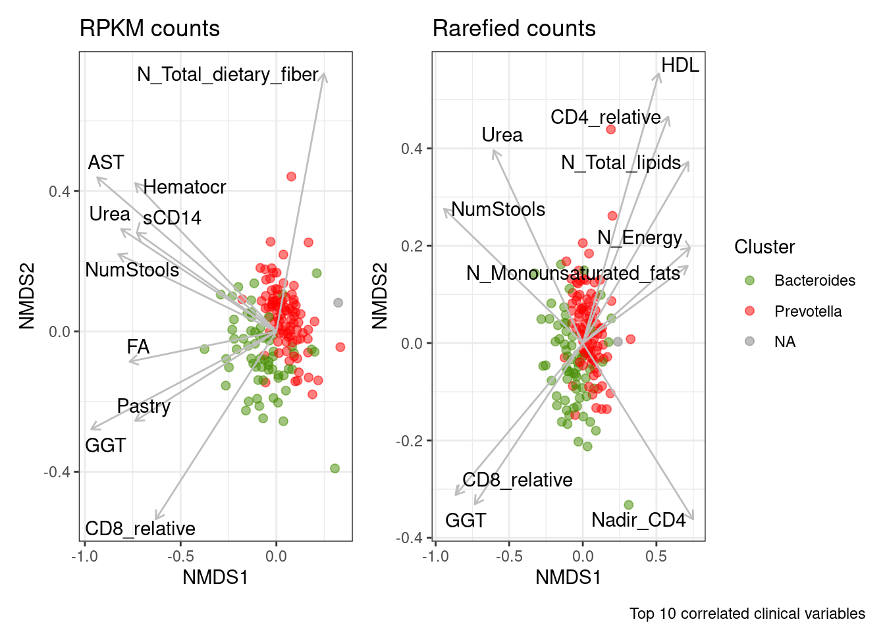
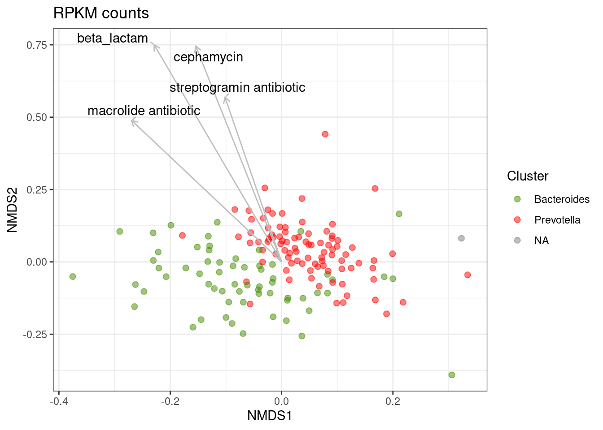
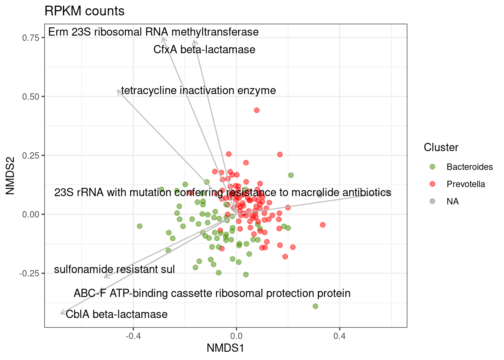
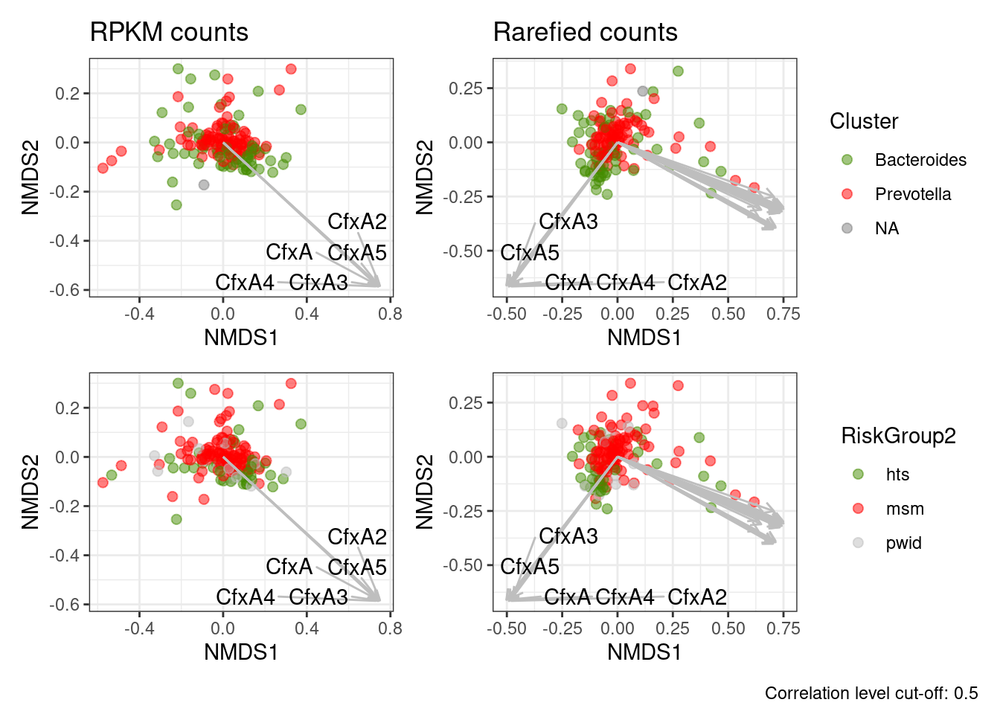
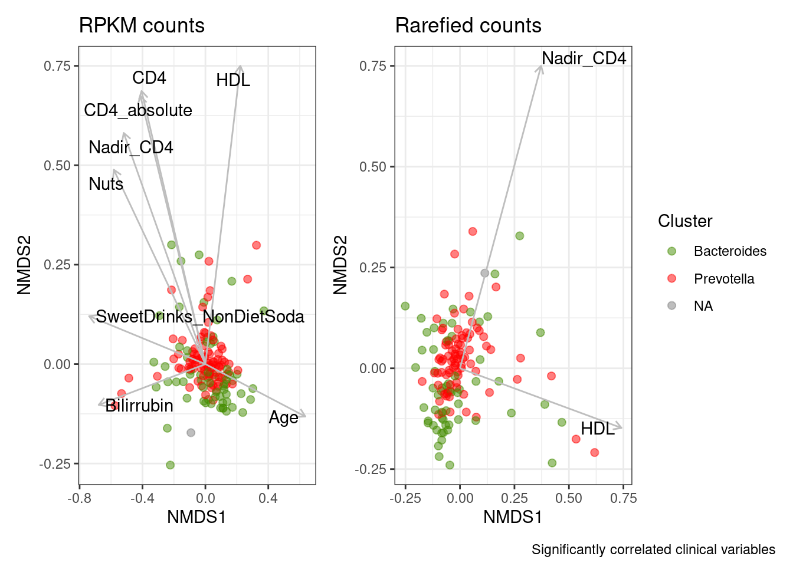

Last updated: 2022-12-23
Checks: 6 1
Knit directory: 2022_Rubio_MetaHIV/
This reproducible R Markdown analysis was created with workflowr (version 1.7.0). The Checks tab describes the reproducibility checks that were applied when the results were created. The Past versions tab lists the development history.
The R Markdown is untracked by Git. To know which version of the R
Markdown file created these results, you’ll want to first commit it to
the Git repo. If you’re still working on the analysis, you can ignore
this warning. When you’re finished, you can run
wflow_publish to commit the R Markdown file and build the
HTML.
Great job! The global environment was empty. Objects defined in the global environment can affect the analysis in your R Markdown file in unknown ways. For reproduciblity it’s best to always run the code in an empty environment.
The command set.seed(20220202) was run prior to running
the code in the R Markdown file. Setting a seed ensures that any results
that rely on randomness, e.g. subsampling or permutations, are
reproducible.
Great job! Recording the operating system, R version, and package versions is critical for reproducibility.
Nice! There were no cached chunks for this analysis, so you can be confident that you successfully produced the results during this run.
Great job! Using relative paths to the files within your workflowr project makes it easier to run your code on other machines.
Great! You are using Git for version control. Tracking code development and connecting the code version to the results is critical for reproducibility.
The results in this page were generated with repository version 0145fcb. See the Past versions tab to see a history of the changes made to the R Markdown and HTML files.
Note that you need to be careful to ensure that all relevant files for
the analysis have been committed to Git prior to generating the results
(you can use wflow_publish or
wflow_git_commit). workflowr only checks the R Markdown
file, but you know if there are other scripts or data files that it
depends on. Below is the status of the Git repository when the results
were generated:
Ignored files:
Ignored: .Rhistory
Ignored: .Rproj.user/
Ignored: analysis/.Rhistory
Ignored: output/aribaData/
Ignored: output/grootData/
Untracked files:
Untracked: PEC3/alpha_div_nosig.png
Untracked: analysis/06_group_matrixes.Rmd
Untracked: analysis/07_biplots.Rmd
Untracked: analysis/08_differentially_abundant.Rmd
Untracked: analysis/amr_significance.Rmd
Untracked: analysis/biplot_envfit.Rmd
Untracked: analysis/biplot_spearman.Rmd
Untracked: analysis/counts.Rmd
Untracked: analysis/gene_richness.Rmd
Untracked: analysis/grouped_significance.Rmd
Untracked: analysis/heatmap.Rmd
Untracked: analysis/import_virulome.Rmd
Untracked: analysis/import_virulome_data.Rmd
Unstaged changes:
Deleted: analysis/01_1_import_virulome.Rmd
Deleted: analysis/01_2_import_virulome_data.Rmd
Deleted: analysis/04_01_counts.Rmd
Modified: analysis/04_alpha_div.Rmd
Modified: analysis/05_beta_div.Rmd
Deleted: analysis/06_2_biplot_envfit.Rmd
Deleted: analysis/06_biplot.Rmd
Deleted: analysis/07_heatmap.Rmd
Deleted: analysis/08_amr_significance.Rmd
Deleted: analysis/09_group_matrixes.Rmd
Deleted: analysis/10_grouped_significance.Rmd
Deleted: analysis/11_gene_richness.Rmd
Modified: analysis/PEC3.Rmd
Deleted: analysis/PEC3_biplots.Rmd
Modified: analysis/_site.yml
Deleted: analysis/differentially_abundant.Rmd
Modified: analysis/index.Rmd
Modified: code/functions.R
Modified: output/ariba_dist.RDA
Modified: output/envfit_rpkm_amr_corlev2.csv
Modified: output/envfit_rpkm_drugclass_corlev2.csv
Modified: output/envfit_rpkm_genefamily_corlev2.csv
Modified: output/envfit_rpkm_meta_top10.csv
Modified: output/genefamily_grich.xlsx
Modified: output/genefamily_mcluster.xlsx
Modified: output/genefamily_sexualp.xlsx
Modified: output/groot_dist.RDA
Modified: output/sumtable_grich.xlsx
Modified: output/sumtable_mcluster.xlsx
Modified: output/sumtable_sexualp.xlsx
Note that any generated files, e.g. HTML, png, CSS, etc., are not included in this status report because it is ok for generated content to have uncommitted changes.
There are no past versions. Publish this analysis with
wflow_publish() to start tracking its development.
library(tidyverse)
library(vegan)
library(broom)
library(ggrepel)
library(glue)
library(usedist)
library(patchwork)
library(kableExtra)load("output/ariba_dist.RDA")
load("output/summarized_ariba.RDA")
load("output/rarefied_ariba.RDA")
load("output/grouped_rpkm_ariba.RDA")
load("output/grouped_refname_ariba.RDA")
metadata<-read_csv("data/Metadata/metadata.csv")
load("output/rarefied2500_groot.RDA")
load("output/summarized_groot.RDA")
load("output/groot_dist.RDA")Function to obtain metadata variables correlations with NMDs axes:
corr_meta_envfit<-function(metadata, nmds){
nmds_positions<-nmds$points%>%
as_tibble(rownames="SampleID")%>%
rename(NMDS1=MDS1, NMDS2=MDS2)
metadata<-metadata%>%
filter(SampleID %in% nmds_positions$SampleID)%>%
arrange(SampleID)
meta<-metadata%>%select(where(is.numeric))
fit <-envfit(nmds, meta, perm = 999, na.rm=TRUE)
##Generate NMDS positions for the plot
##Transform values adjusted by pvalue with fx scores and multiply by arrowmult value
cor<-scores(fit, "vectors")%>%
as_tibble(rownames="Variable")%>%
mutate(NMDS1=NMDS1*ordiArrowMul(fit), NMDS2=NMDS2*ordiArrowMul(fit), r2=fit$vectors$r, p.value=fit$vectors$pvals)%>%
return(cor)
}Function to obtain AMR correlations with NMDs axes:
corr_amr_envfit<-function(data, refdata, nmds){
##transpose data
ref_name<-pull(data, ref_name)
data<-as_tibble(cbind(SampleID = names(data), t(data)))%>%slice(-1)%>%
mutate_at(vars(-("SampleID")),as.numeric)
colnames(data)<-c("SampleID", ref_name)
##Perform envfit
fit <-envfit(nmds, data[ ,-1], perm = 999)
##Generate NMDS positions for the plot: Transform values adjusted by pvalue with fx scores and multiply by arrowmult value
cor<-scores(fit, "vectors")%>%
as_tibble(rownames="ref_name")%>%
mutate(NMDS1=NMDS1*ordiArrowMul(fit), NMDS2=NMDS2*ordiArrowMul(fit), r2=fit$vectors$r, p.value=fit$vectors$pvals)%>%
left_join(., refdata, by="ref_name")
return(cor)}Function to obtain functional group correlations with NMDs axes:
corr_group_envfit<-function(data_group, refdata_group, nmds){
##transpose data
group_name<-pull(data_group, 1)
data_group<-as_tibble(cbind(SampleID = names(data_group), t(data_group)))%>%slice(-1)%>%
mutate_at(vars(-("SampleID")),as.numeric)
colnames(data_group)<-c("SampleID", group_name)
##Perform envfit
fit <-envfit(nmds, data_group[ ,-1], perm = 999)
refdata_group<-refdata_group%>%rename(group_name=1)
##Generate NMDS positions for the plot: Transform values adjusted by pvalue with fx scores and multiply by arrowmult value
cor<-scores(fit, "vectors")%>%
as_tibble(rownames="group_name")%>%
mutate(NMDS1=NMDS1*ordiArrowMul(fit), NMDS2=NMDS2*ordiArrowMul(fit), r2=fit$vectors$r, p.value=fit$vectors$pvals)%>%
left_join(., refdata_group, by="group_name")
return(cor)}Function to obtain biplot showing selected correlations (AMR, clinical variables or grouped variables):
biplot_amr_envfit<-function(high_cor, nmds, metadata, clin_var, label_var){
clin_var<-enquo(clin_var)
label_var<-enquo(label_var)
nmds_positions<-nmds$points%>%
as_tibble(rownames="SampleID")%>%
rename(NMDS1=MDS1, NMDS2=MDS2)
nmds_positions%>%
left_join(., metadata, by="SampleID")%>%
##ggplot(aes(x=NMDS1, y=NMDS2)) +
ggplot( aes(x=NMDS1, y=NMDS2, color=!!clin_var)) +
geom_point(alpha=0.5, size=2)+
geom_segment(data=high_cor,
aes(x=0, xend=NMDS1, y=0, yend=NMDS2),
arrow = arrow(length = unit(0.2, "cm")), alpha=1,colour="gray",
inherit.aes=FALSE)+
geom_text_repel(data=high_cor,
aes(x=NMDS1, y=NMDS2, label=!!label_var),
min.segment.length = 0.15, segment.alpha=1, segment.color="gray",
inherit.aes=FALSE) +
theme_bw()+
scale_color_manual(values = c("chartreuse4", "red", "gray"))
}set.seed(200889)
nmds_rpkm<-metaMDS(ariba_dist$dist_rpkm, trace = 0, trymax = 200)
nmds_rar<-metaMDS(ariba_dist$dist_rar, trace = 0, trymax = 200)set.seed(200889)
cor_rpkm<-corr_amr_envfit(ariba_rpkm, refname_all_ariba, nmds_rpkm)
cor_rar<-corr_amr_envfit(ariba_rar, refname_all_ariba, nmds_rar)
cor_rpkm%>%slice_max(r2, n=20)%>%select(`ARO Name`, r2, p.value, everything(), -NMDS1, -NMDS2)%>%
kable(caption="**Top 20 correlated AMR genes with NMDS axes** (Ariba RPKM)")%>%kable_paper("striped")%>%scroll_box(width = "100%", height = "500px")| ARO Name | r2 | p.value | ref_name | ARO Term | ARO Accession | NCBI | init_final | CVTERM ID | Protein Accession | DNA Accession | AMR Gene Family | Drug Class | Resistance Mechanism |
|---|---|---|---|---|---|---|---|---|---|---|---|---|---|
| tetQ | 0.5903074 | 0.001 | tetQ.3000191.Z21523.0_1974.476 | tetQ | 3000191 | Z21523 | 0_1974 | 36330 | CAA79727.1 | Z21523 | tetracycline-resistant ribosomal protection protein | tetracycline antibiotic | antibiotic target protection |
| CfxA6 | 0.4608610 | 0.001 | CfxA6.3003097.GQ342996.797_1793.1744 | CfxA6 | 3003097 | GQ342996 | 797_1793 | 39650 | ACT97371.1 | GQ342996 | CfxA beta-lactamase | cephamycin | antibiotic inactivation |
| ErmF | 0.4487833 | 0.001 | ErmF.3000498.M17124.1181_1982.593 | ErmF | 3000498 | M17124 | 1181_1982 | 36637 | AAA88675.1 | M17124 | Erm 23S ribosomal RNA methyltransferase | lincosamide antibiotic;macrolide antibiotic;streptogramin antibiotic | antibiotic target alteration |
| CblA-1 | 0.4050422 | 0.001 | CblA_1.3002999.GQ343019.132_1023.1188 | CblA_1 | 3002999 | GQ343019 | 132_1023 | 39433 | ACT97415.1 | GQ343019 | CblA beta-lactamase | cephalosporin | antibiotic inactivation |
| Mef(En2) | 0.3537413 | 0.001 | Mef_En2_.3004659.AF251288.1.794_2000.5539 | Mef_En2_ | 3004659 | AF251288 . 1 | 794_2000 | 42698 | AAF74725.1 | AF251288.1 | major facilitator superfamily (MFS) antibiotic efflux pump | macrolide antibiotic | antibiotic efflux |
| tetX | 0.3118352 | 0.001 | tetX.3000205.M37699.585_1752.79 | tetX | 3000205 | M37699 | 585_1752 | 36344 | AAA27471.1 | M37699 | tetracycline inactivation enzyme | glycylcycline;tetracycline antibiotic | antibiotic inactivation |
| tetW | 0.2705962 | 0.001 | tetW.3000194.AJ222769.3.3686_5606.5145 | tetW | 3000194 | AJ222769 . 3 | 3686_5606 | 36333 | CAA10975.1 | AJ222769.3 | tetracycline-resistant ribosomal protection protein | tetracycline antibiotic | antibiotic target protection |
| mel | 0.2489629 | 0.001 | mel.3000616.AF227521.1.3269_4487.5180 | mel | 3000616 | AF227521 . 1 | 3269_4487 | 36910 | AAL73129.1 | AF227521.1 | ABC-F ATP-binding cassette ribosomal protection protein | lincosamide antibiotic;macrolide antibiotic;oxazolidinone antibiotic;phenicol antibiotic;pleuromutilin antibiotic;streptogramin antibiotic;tetracycline antibiotic | antibiotic target protection |
| ErmG | 0.2219797 | 0.001 | ErmG.3000522.L42817.201_936.590 | ErmG | 3000522 | L42817 | 201_936 | 36661 | AAC37034.1 | L42817 | Erm 23S ribosomal RNA methyltransferase | lincosamide antibiotic;macrolide antibiotic;streptogramin antibiotic | antibiotic target alteration |
| sul2 | 0.1887185 | 0.001 | sul2.3000412.AY055428.1.20268_21084.4745 | sul2 | 3000412 | AY055428 . 1 | 20268_21084 | 36551 | AAL59753.1 | AY055428.1 | sulfonamide resistant sul | sulfonamide antibiotic;sulfone antibiotic | antibiotic target replacement |
| CfxA2 | 0.1838080 | 0.001 | CfxA2.3003002.AF118110.1.71_1037.4470 | CfxA2 | 3003002 | AF118110 . 1 | 71_1037 | 39436 | AAD23513.1 | AF118110.1 | CfxA beta-lactamase | cephamycin | antibiotic inactivation |
| Mycoplasma hominis 23S rRNA with mutation conferring resistance to macrolide antibiotics | 0.1820248 | 0.001 | Mycoplasma_hominis_23S.3004176.CP011538.1.333282_336166.4166 | Mycoplasma_hominis_23S | 3004176 | CP011538 . 1 | 333282_336166 | 41327 | NA | CP011538.1 | 23S rRNA with mutation conferring resistance to macrolide antibiotics | glycopeptide antibiotic;lincosamide antibiotic;macrolide antibiotic;phenicol antibiotic;pleuromutilin antibiotic;streptogramin antibiotic | antibiotic target alteration |
| Chlamydomonas reinhardtii 16S rRNA (rrnS) mutation conferring resistance to streptomycin | 0.1683592 | 0.001 | rrnS.3003978.NC_005353.1.38549_40023.4108 | rrnS | 3003978 | NC_005353 . 1 | 38549_40023 | 40814 | NA | NC_005353.1 | 16s rRNA with mutation conferring resistance to aminoglycoside antibiotics | aminoglycoside antibiotic;glycopeptide antibiotic;glycylcycline;nucleoside antibiotic;peptide antibiotic;tetracycline antibiotic | antibiotic target alteration |
| Brachyspira hyodysenteriae 23S rRNA with mutation conferring resistance to tylosin | 0.1518795 | 0.001 | Brachyspira_hyodysenteriae_23S.3004133.NZ_CP015910.2.2512812_2515808.4183 | Brachyspira_hyodysenteriae_23S | 3004133 | NZ_CP015910 . 2 | 2512812_2515808 | 41260 | NA | NZ_CP015910.2 | 23S rRNA with mutation conferring resistance to macrolide antibiotics | glycopeptide antibiotic;lincosamide antibiotic;macrolide antibiotic;phenicol antibiotic;pleuromutilin antibiotic;streptogramin antibiotic | antibiotic target alteration |
| aadS | 0.1423614 | 0.001 | aadS.3004683.M72415.1.1120_1984.5568 | aadS | 3004683 | M72415 . 1 | 1120_1984 | 42732 | AAA27459.1 | M72415.1 | ANT(6) | aminoglycoside antibiotic | antibiotic inactivation |
| Escherichia coli ampC1 beta-lactamase | 0.1346535 | 0.001 | Escherichia_coli_ampC1.3004611.FN649414.1.2765050_2766355.5236 | Escherichia_coli_ampC1 | 3004611 | FN649414 . 1 | 2765050_2766355 | 42575 | CBJ02047.1 | FN649414.1 | ampC-type beta-lactamase | cephalosporin;penam | antibiotic inactivation |
| Campylobacter jejuni 23S rRNA with mutation conferring resistance to erythromycin | 0.1342265 | 0.001 | Campylobacter_jejuni_23S.3004546.NR_076226.1.0_2912.5105 | Campylobacter_jejuni_23S | 3004546 | NR_076226 . 1 | 0_2912 | 42445 | NA | NR_076226.1 | 23S rRNA with mutation conferring resistance to macrolide antibiotics | glycopeptide antibiotic;lincosamide antibiotic;macrolide antibiotic;phenicol antibiotic;pleuromutilin antibiotic;streptogramin antibiotic | antibiotic target alteration |
| Escherichia coli gyrA with mutation conferring resistance to triclosan | 0.1320445 | 0.001 | gyrA.3004335.U00096.3.2336792_2339420.4469 | gyrA | 3004335 | U00096 . 3 | 2336792_2339420 | 41503 | AAC75291.1 | U00096.3 | triclosan resistant gyrA | triclosan | antibiotic target alteration |
| Neisseria gonorrhoeae 23S rRNA with mutation conferring resistance to azithromycin | 0.1226001 | 0.001 | Neisseria_gonorrhoeae_23S.3004836.NR_103957.0_2910.5918 | Neisseria_gonorrhoeae_23S | 3004836 | NR_103957 | 0_2910 | 42966 | NA | NR_103957 | 23S rRNA with mutation conferring resistance to macrolide antibiotics | glycopeptide antibiotic;lincosamide antibiotic;macrolide antibiotic;phenicol antibiotic;pleuromutilin antibiotic;streptogramin antibiotic | antibiotic target alteration |
| baeS | 0.1211112 | 0.002 | baeS.3000829.AP009048.2165012_2166416.608 | baeS | 3000829 | AP009048 | 2165012_2166416 | 37209 | BAA15934.1 | AP009048 | resistance-nodulation-cell division (RND) antibiotic efflux pump | aminocoumarin antibiotic;aminoglycoside antibiotic | antibiotic efflux |
cor_rar%>%slice_max(r2, n=20)%>%select(`ARO Name`, r2, p.value, everything(), -NMDS1, -NMDS2)%>%
kable(caption="**Top 20 correlated AMR genes with NMDS axes** (Ariba Rarefied)")%>%kable_paper("striped")%>%scroll_box(width = "100%", height = "500px")| ARO Name | r2 | p.value | ref_name | ARO Term | ARO Accession | NCBI | init_final | CVTERM ID | Protein Accession | DNA Accession | AMR Gene Family | Drug Class | Resistance Mechanism |
|---|---|---|---|---|---|---|---|---|---|---|---|---|---|
| tetQ | 0.6369594 | 0.001 | tetQ.3000191.Z21523.0_1974.476 | tetQ | 3000191 | Z21523 | 0_1974 | 36330 | CAA79727.1 | Z21523 | tetracycline-resistant ribosomal protection protein | tetracycline antibiotic | antibiotic target protection |
| CblA-1 | 0.3412281 | 0.001 | CblA_1.3002999.GQ343019.132_1023.1188 | CblA_1 | 3002999 | GQ343019 | 132_1023 | 39433 | ACT97415.1 | GQ343019 | CblA beta-lactamase | cephalosporin | antibiotic inactivation |
| tetW | 0.3332979 | 0.001 | tetW.3000194.AJ222769.3.3686_5606.5145 | tetW | 3000194 | AJ222769 . 3 | 3686_5606 | 36333 | CAA10975.1 | AJ222769.3 | tetracycline-resistant ribosomal protection protein | tetracycline antibiotic | antibiotic target protection |
| CfxA6 | 0.3209338 | 0.001 | CfxA6.3003097.GQ342996.797_1793.1744 | CfxA6 | 3003097 | GQ342996 | 797_1793 | 39650 | ACT97371.1 | GQ342996 | CfxA beta-lactamase | cephamycin | antibiotic inactivation |
| Mycoplasma hominis 23S rRNA with mutation conferring resistance to macrolide antibiotics | 0.3080546 | 0.001 | Mycoplasma_hominis_23S.3004176.CP011538.1.333282_336166.4166 | Mycoplasma_hominis_23S | 3004176 | CP011538 . 1 | 333282_336166 | 41327 | NA | CP011538.1 | 23S rRNA with mutation conferring resistance to macrolide antibiotics | glycopeptide antibiotic;lincosamide antibiotic;macrolide antibiotic;phenicol antibiotic;pleuromutilin antibiotic;streptogramin antibiotic | antibiotic target alteration |
| Mef(En2) | 0.2875978 | 0.001 | Mef_En2_.3004659.AF251288.1.794_2000.5539 | Mef_En2_ | 3004659 | AF251288 . 1 | 794_2000 | 42698 | AAF74725.1 | AF251288.1 | major facilitator superfamily (MFS) antibiotic efflux pump | macrolide antibiotic | antibiotic efflux |
| mel | 0.2165463 | 0.001 | mel.3000616.AF227521.1.3269_4487.5180 | mel | 3000616 | AF227521 . 1 | 3269_4487 | 36910 | AAL73129.1 | AF227521.1 | ABC-F ATP-binding cassette ribosomal protection protein | lincosamide antibiotic;macrolide antibiotic;oxazolidinone antibiotic;phenicol antibiotic;pleuromutilin antibiotic;streptogramin antibiotic;tetracycline antibiotic | antibiotic target protection |
| Escherichia coli ampC1 beta-lactamase | 0.2067226 | 0.001 | Escherichia_coli_ampC1.3004611.FN649414.1.2765050_2766355.5236 | Escherichia_coli_ampC1 | 3004611 | FN649414 . 1 | 2765050_2766355 | 42575 | CBJ02047.1 | FN649414.1 | ampC-type beta-lactamase | cephalosporin;penam | antibiotic inactivation |
| Staphylococcus aureus 23S rRNA with mutation conferring resistance to linezolid | 0.2057341 | 0.001 | Staphylococcus_aureus_23S.3004058.NZ_CP009828.1.497113_500039.4128 | Staphylococcus_aureus_23S | 3004058 | NZ_CP009828 . 1 | 497113_500039 | 41124 | NA | NZ_CP009828.1 | 23S rRNA with mutation conferring resistance to linezolid antibiotics | glycopeptide antibiotic;lincosamide antibiotic;macrolide antibiotic;oxazolidinone antibiotic;phenicol antibiotic;pleuromutilin antibiotic;streptogramin antibiotic | antibiotic target alteration |
| baeS | 0.2016801 | 0.001 | baeS.3000829.AP009048.2165012_2166416.608 | baeS | 3000829 | AP009048 | 2165012_2166416 | 37209 | BAA15934.1 | AP009048 | resistance-nodulation-cell division (RND) antibiotic efflux pump | aminocoumarin antibiotic;aminoglycoside antibiotic | antibiotic efflux |
| ErmF | 0.2006632 | 0.001 | ErmF.3000498.M17124.1181_1982.593 | ErmF | 3000498 | M17124 | 1181_1982 | 36637 | AAA88675.1 | M17124 | Erm 23S ribosomal RNA methyltransferase | lincosamide antibiotic;macrolide antibiotic;streptogramin antibiotic | antibiotic target alteration |
| baeR | 0.1954429 | 0.001 | baeR.3000828.AP009048.1.2166412_2167135.5369 | baeR | 3000828 | AP009048 . 1 | 2166412_2167135 | 37208 | BAA15935.1 | AP009048.1 | resistance-nodulation-cell division (RND) antibiotic efflux pump | aminocoumarin antibiotic;aminoglycoside antibiotic | antibiotic efflux |
| Escherichia coli gyrA with mutation conferring resistance to triclosan | 0.1929954 | 0.001 | gyrA.3004335.U00096.3.2336792_2339420.4469 | gyrA | 3004335 | U00096 . 3 | 2336792_2339420 | 41503 | AAC75291.1 | U00096.3 | triclosan resistant gyrA | triclosan | antibiotic target alteration |
| kdpE | 0.1915053 | 0.001 | kdpE.3003841.U00096.3.721055_721733.5205 | kdpE | 3003841 | U00096 . 3 | 721055_721733 | 40534 | AAC73788.1 | U00096.3 | kdpDE | aminoglycoside antibiotic | antibiotic efflux |
| Chlamydomonas reinhardtii 16S rRNA (rrnS) mutation conferring resistance to streptomycin | 0.1891048 | 0.001 | rrnS.3003978.NC_005353.1.38549_40023.4108 | rrnS | 3003978 | NC_005353 . 1 | 38549_40023 | 40814 | NA | NC_005353.1 | 16s rRNA with mutation conferring resistance to aminoglycoside antibiotics | aminoglycoside antibiotic;glycopeptide antibiotic;glycylcycline;nucleoside antibiotic;peptide antibiotic;tetracycline antibiotic | antibiotic target alteration |
| YojI | 0.1889271 | 0.001 | YojI.3003952.U00096.3.2306971_2308615.5261 | YojI | 3003952 | U00096 . 3 | 2306971_2308615 | 40722 | AAC75271.1 | U00096.3 | ATP-binding cassette (ABC) antibiotic efflux pump | peptide antibiotic | antibiotic efflux |
| Escherichia coli GlpT with mutation conferring resistance to fosfomycin | 0.1881641 | 0.001 | Escherichia_coli_GlpT.3003889.HG738867.2233288_2234647.4617 | Escherichia_coli_GlpT | 3003889 | HG738867 | 2233288_2234647 | 40588 | CDJ72593 | HG738867 | antibiotic-resistant GlpT | fosfomycin | antibiotic target alteration |
| Escherichia coli fabI mutations conferring resistance to isoniazid and triclosan | 0.1876992 | 0.001 | fabI.3004045.U00096.3.1350250_1351039.5254 | fabI | 3004045 | U00096 . 3 | 1350250_1351039 | 41097 | AAC74370.1 | U00096.3 | antibiotic resistant fabI | isoniazid;triclosan | antibiotic target alteration |
| Escherichia coli acrR with mutation conferring multidrug antibiotic resistance | 0.1863620 | 0.001 | acrR.3003807.U00096.3.485760_486408.5225 | acrR | 3003807 | U00096 . 3 | 485760_486408 | 40492 | AAC73566.1 | U00096.3 | resistance-nodulation-cell division (RND) antibiotic efflux pump | cephalosporin;fluoroquinolone antibiotic;glycylcycline;penam;phenicol antibiotic;rifamycin antibiotic;tetracycline antibiotic;triclosan | antibiotic efflux;antibiotic target alteration |
| marA | 0.1851607 | 0.001 | marA.3000263.AP009048.1.1621287_1621671.5219 | marA | 3000263 | AP009048 . 1 | 1621287_1621671 | 36402 | BAA15221.2 | AP009048.1 | General Bacterial Porin with reduced permeability to beta-lactams;resistance-nodulation-cell division (RND) antibiotic efflux pump | carbapenem;cephalosporin;cephamycin;fluoroquinolone antibiotic;glycylcycline;monobactam;penam;penem;phenicol antibiotic;rifamycin antibiotic;tetracycline antibiotic;triclosan | antibiotic efflux;reduced permeability to antibiotic |
cor_level<-0.2
high_cor_rpkm<-cor_rpkm%>%filter(p.value<=0.05 & r2 > cor_level)
high_cor_rar<-cor_rar%>%filter(p.value<=0.05 & r2 > cor_level)p1<-biplot_amr_envfit(high_cor_rpkm, nmds_rpkm, metadata, Cluster, `ARO Name`)+
labs(title = "RPKM counts")+theme(legend.position = "none")
p2<-biplot_amr_envfit(high_cor_rar, nmds_rar, metadata, Cluster, `ARO Name`)+
labs(title = "Rarefied counts")
p3<-biplot_amr_envfit(high_cor_rpkm, nmds_rpkm, metadata, RiskGroup2, `ARO Name`)+
theme(legend.position = "none")
p4<-biplot_amr_envfit(high_cor_rar, nmds_rar, metadata, RiskGroup2, `ARO Name`)
p1+p2+p3+p4+ plot_layout(nrow = 2, byrow = TRUE)+plot_annotation(caption=glue("Correlation level cut-off: {cor_level}"))
set.seed(200889)
cor_rpkm<-corr_meta_envfit(metadata, nmds_rpkm)
cor_rar<-corr_meta_envfit(metadata, nmds_rar)
cor_rpkm%>%slice_max(r2, n=10)%>%
select(-NMDS1, -NMDS2)%>%
kable(caption="**Top 10 correlated Clinical variables with NMDS axes** (Ariba RPKM)")%>%kable_paper("striped")%>%scroll_box(width = "100%", height = "500px")| Variable | r2 | p.value |
|---|---|---|
| AST | 0.1690821 | 0.069 |
| GGT | 0.1602029 | 0.064 |
| Urea | 0.1175595 | 0.134 |
| NumStools | 0.1155965 | 0.139 |
| Hematocr | 0.1142849 | 0.139 |
| CD8_relative | 0.1082064 | 0.145 |
| sCD14 | 0.0967432 | 0.177 |
| Pastry | 0.0962553 | 0.208 |
| N_Total_dietary_fiber | 0.0952914 | 0.173 |
| FA | 0.0942149 | 0.204 |
cor_rar%>%slice_max(r2, n=10)%>%
select(-NMDS1, -NMDS2)%>%
kable(caption="**Top 10 correlated Clinical variables with NMDS axes** (Ariba Rarefied)")%>%kable_paper("striped")%>%scroll_box(width = "100%", height = "500px")| Variable | r2 | p.value |
|---|---|---|
| NumStools | 0.1948788 | 0.025 |
| CD8_relative | 0.1706728 | 0.040 |
| Nadir_CD4 | 0.1401525 | 0.094 |
| N_Total_lipids | 0.1321196 | 0.081 |
| GGT | 0.1308048 | 0.107 |
| HDL | 0.1158050 | 0.145 |
| N_Energy | 0.1148005 | 0.121 |
| CD4_relative | 0.1117059 | 0.117 |
| N_Monounsaturated_fats | 0.1076791 | 0.145 |
| Urea | 0.1058852 | 0.167 |
top_n=10
high_cor_rpkm<-cor_rpkm%>%slice_max(r2, n=top_n)
high_cor_rar<-cor_rar%>%slice_max(r2, n=top_n)p1<-biplot_amr_envfit(high_cor_rpkm, nmds_rpkm, metadata, Cluster, Variable)+
labs(title = "RPKM counts")+theme(legend.position = "none")
p2<-biplot_amr_envfit(high_cor_rar, nmds_rar, metadata, Cluster, Variable)+
labs(title = "Rarefied counts")
p1+p2+plot_annotation(caption=glue("Top {top_n} correlated clinical variables"))
set.seed(200889)
cor_rpkm_drugclass<-corr_group_envfit(data_group=ariba_rpkm_drugclass, refdata_group = refname_ariba_drugclass, nmds = nmds_rpkm)
cor_rpkm_drugclass%>%slice_max(r2, n=20)%>%select(group_name, r2, p.value, everything(), -NMDS1, -NMDS2)%>%
kable(caption="**Top 20 correlated drug classes with NMDS axes** (Ariba RPKM)")%>%kable_paper("striped")%>%scroll_box(width = "100%", height = "500px")| group_name | r2 | p.value | AMR Gene Family | ARO Name |
|---|---|---|---|---|
| beta_lactam | 0.4479248 | 0.001 | NA | NA |
| cephamycin | 0.4226239 | 0.001 | CfxA beta-lactamase;resistance-nodulation-cell division (RND) antibiotic efflux pump;ATP-binding cassette (ABC) antibiotic efflux pump;major facilitator superfamily (MFS) antibiotic efflux pump;General Bacterial Porin with reduced permeability to beta-lactams;Penicillin-binding protein mutations conferring resistance to beta-lactam antibiotics;ACT beta-lactamase;CMY beta-lactamase | CfxA2;CfxA6;CfxA3;AcrE;AcrF;AcrS;TolC;porin OmpC;Klebsiella aerogenes Omp36;Klebsiella pneumoniae OmpK35;Klebsiella pneumoniae OmpK36;Klebsiella pneumoniae OmpK37;OmpA;CfxA5;Escherichia coli soxS with mutation conferring antibiotic resistance;H-NS;Escherichia coli ompF with mutation conferring resistance to beta-lactam antibiotics;Streptococcus pneumoniae PBP2b conferring resistance to amoxicillin;ACT-17;marA;CfxA4;ACT-45;ACT-4;ACT-7;ACT-38;ACT-39;CMY-90;CMY-169 |
| streptogramin antibiotic | 0.2434340 | 0.001 | 23S rRNA with mutation conferring resistance to macrolide antibiotics;Erm 23S ribosomal RNA methyltransferase;23S rRNA with mutation conferring resistance to linezolid antibiotics;23S rRNA with mutation conferring resistance to streptogramins antibiotics;23S rRNA with mutation conferring resistance to pleuromutilin antibiotics;ABC-F ATP-binding cassette ribosomal protection protein;23S rRNA with mutation conferring resistance to oxazolidinone antibiotics;23s rRNA with mutation conferring resistance to aminoglycoside antibiotics;Cfr 23S ribosomal RNA methyltransferase | Clostridioides difficile 23S rRNA with mutation conferring resistance to erythromycin and clindamycin;ErmB;ErmF;ErmG;Moraxella catarrhalis 23S rRNA with mutation conferring resistance to macrolide antibiotics;Mycoplasma hominis 23S rRNA with mutation conferring resistance to macrolide antibiotics;Neisseria gonorrhoeae 23S rRNA with mutation conferring resistance to azithromycin;Staphylococcus aureus 23S rRNA with mutation conferring resistance to linezolid;Streptococcus pneumoniae 23S rRNA mutation conferring resistance to macrolides and streptogramins antibiotics;Thermus thermophilus 23s rRNA conferring resistance to pleuromutilin antibiotics;mel;Campylobacter jejuni 23S rRNA with mutation conferring resistance to erythromycin;Chlamydia trachomatis 23S rRNA with mutation conferring resistance to macrolide antibiotics;Escherichia coli 23S rRNA with mutation conferring resistance to oxazolidinone antibiotics;23S rRNA (adenine(2058)-N(6))-methyltransferase Erm(A);Mycobacterium intracellulare 23S rRNA with mutation conferring resistance to azithromycin;ErmX;Brachyspira hyodysenteriae 23S rRNA with mutation conferring resistance to tylosin;Helicobacter pylori 23S rRNA with mutation conferring resistance to clarithromycin;Mycoplasma fermentans 23S rRNA with mutation conferring resistance to macrolide antibiotics;Streptomyces ambofaciens 23S rRNA with mutation conferring resistance to macrolide antibiotics;Erm(49);Mycoplasma genitalium 23S rRNA mutations confers resistance to fluoroquinolone and macrolide antibiotics;Mycolicibacterium smegmatis 23S rRNA with mutation conferring resistance to clarithromycin;msrC;Mycobacterium avium 23S rRNA with mutation conferring resistance to clarithromycin;ErmQ;Mycoplasma gallisepticum 23S rRNA mutation conferring resistance to pleuromutilin antibiotics;lsaA;Mycobacterium tuberculosis 23S rRNA mutation conferring resistance to capreomycin;Propionibacteria 23S rRNA with mutation conferring resistance to macrolide antibiotics;Mycobacteroides abscessus 23S rRNA with mutation conferring resistance to clarithromycin;Mycobacterium kansasii 23S rRNA with mutation conferring resistance to clarithromycin;lsaE;Mycoplasma pneumoniae 23S rRNA mutation conferring resistance to erythromycin;Mycobacteroides chelonae 23S rRNA with mutation conferring resistance to clarithromycin;lsaC;Chlamydomonas reinhardtii 23S rRNA with mutation conferring resistance to erythromycin;eatAv;cfr(B) |
| macrolide antibiotic | 0.2267116 | 0.001 | 23S rRNA with mutation conferring resistance to macrolide antibiotics;Erm 23S ribosomal RNA methyltransferase;major facilitator superfamily (MFS) antibiotic efflux pump;23S rRNA with mutation conferring resistance to linezolid antibiotics;23S rRNA with mutation conferring resistance to streptogramins antibiotics;23S rRNA with mutation conferring resistance to pleuromutilin antibiotics;ABC-F ATP-binding cassette ribosomal protection protein;23S rRNA with mutation conferring resistance to oxazolidinone antibiotics;resistance-nodulation-cell division (RND) antibiotic efflux pump;ATP-binding cassette (ABC) antibiotic efflux pump;pmr phosphoethanolamine transferase;macrolide phosphotransferase (MPH);23s rRNA with mutation conferring resistance to aminoglycoside antibiotics;small multidrug resistance (SMR) antibiotic efflux pump;macrolide esterase | Clostridioides difficile 23S rRNA with mutation conferring resistance to erythromycin and clindamycin;ErmB;ErmF;ErmG;Mef(En2);Moraxella catarrhalis 23S rRNA with mutation conferring resistance to macrolide antibiotics;Mycoplasma hominis 23S rRNA with mutation conferring resistance to macrolide antibiotics;Neisseria gonorrhoeae 23S rRNA with mutation conferring resistance to azithromycin;Staphylococcus aureus 23S rRNA with mutation conferring resistance to linezolid;Streptococcus pneumoniae 23S rRNA mutation conferring resistance to macrolides and streptogramins antibiotics;Thermus thermophilus 23s rRNA conferring resistance to pleuromutilin antibiotics;mel;Campylobacter jejuni 23S rRNA with mutation conferring resistance to erythromycin;Chlamydia trachomatis 23S rRNA with mutation conferring resistance to macrolide antibiotics;Escherichia coli 23S rRNA with mutation conferring resistance to oxazolidinone antibiotics;23S rRNA (adenine(2058)-N(6))-methyltransferase Erm(A);Mycobacterium intracellulare 23S rRNA with mutation conferring resistance to azithromycin;ErmX;Brachyspira hyodysenteriae 23S rRNA with mutation conferring resistance to tylosin;Helicobacter pylori 23S rRNA with mutation conferring resistance to clarithromycin;CRP;Mycoplasma fermentans 23S rRNA with mutation conferring resistance to macrolide antibiotics;Streptomyces ambofaciens 23S rRNA with mutation conferring resistance to macrolide antibiotics;TolC;evgA;evgS;gadW;gadX;mdtE;mdtF;Erm(49);Klebsiella mutant PhoP conferring antibiotic resistance to colistin;Klebsiella pneumoniae KpnE;Klebsiella pneumoniae KpnF;Klebsiella pneumoniae KpnG;Mycoplasma genitalium 23S rRNA mutations confers resistance to fluoroquinolone and macrolide antibiotics;Mycolicibacterium smegmatis 23S rRNA with mutation conferring resistance to clarithromycin;mphA;efmA;msrC;Mycobacterium avium 23S rRNA with mutation conferring resistance to clarithromycin;ErmQ;H-NS;mgrB;Mycoplasma gallisepticum 23S rRNA mutation conferring resistance to pleuromutilin antibiotics;efrA;lsaA;Mycobacterium tuberculosis 23S rRNA mutation conferring resistance to capreomycin;Propionibacteria 23S rRNA with mutation conferring resistance to macrolide antibiotics;Mycobacteroides abscessus 23S rRNA with mutation conferring resistance to clarithromycin;Mycobacterium kansasii 23S rRNA with mutation conferring resistance to clarithromycin;lsaE;Mycoplasma pneumoniae 23S rRNA mutation conferring resistance to erythromycin;Mycobacteroides chelonae 23S rRNA with mutation conferring resistance to clarithromycin;lsaC;Escherichia coli emrE;Chlamydomonas reinhardtii 23S rRNA with mutation conferring resistance to erythromycin;EreD;eatAv;mef(B) |
| glycylcycline | 0.1698771 | 0.001 | 16s rRNA with mutation conferring resistance to aminoglycoside antibiotics;tetracycline inactivation enzyme;16S rRNA with mutation conferring resistance to tetracycline derivatives;resistance-nodulation-cell division (RND) antibiotic efflux pump;ATP-binding cassette (ABC) antibiotic efflux pump;major facilitator superfamily (MFS) antibiotic efflux pump;16s rRNA with mutation conferring resistance to peptide antibiotics;General Bacterial Porin with reduced permeability to beta-lactams | Mycobacteroides chelonae 16S rRNA mutation conferring resistance to neomycin;Neisseria meningitidis 16S rRNA mutation conferring resistance to spectinomycin;Pasteurella multocida 16S rRNA mutation conferring resistance to spectinomycin;Chlamydomonas reinhardtii 16S rRNA (rrnS) mutation conferring resistance to streptomycin;Escherichia coli 16S rRNA (rrsH) mutation conferring resistance to spectinomycin;tetX;Tet(X4);Helicobacter pylori 16S rRNA mutation conferring resistance to tetracycline;Cutibacterium acnes 16S rRNA mutation conferring resistance to tetracycline;Chlamydophila psittaci 16S rRNA mutation conferring resistance to spectinomycin;AcrS;TolC;Escherichia coli acrA;acrB;Escherichia coli acrR with mutation conferring multidrug antibiotic resistance;Escherichia coli 16S rRNA (rrsB) mutation conferring resistance to tetracycline;Escherichia coli soxR with mutation conferring antibiotic resistance;Klebsiella pneumoniae acrA;Enterobacter cloacae acrA;Klebsiella pneumoniae acrR with mutation conferring multidrug antibiotic resistance;oqxA;oqxB;Klebsiella pneumoniae ramR mutants;Salmonella enterica 16S rRNA (rrsD) mutation conferring resistance to spectinomycin;Escherichia coli 16S rRNA (rrsC) mutation conferring resistance to kasugamicin;Mycolicibacterium smegmatis 16S rRNA (rrsB) mutation conferring resistance to viomycin;Escherichia coli soxS with mutation conferring antibiotic resistance;Mycobacterium tuberculosis 16S rRNA mutation conferring resistance to capreomycin;Mycolicibacterium smegmatis 16S rRNA (rrsB) mutation conferring resistance to hygromycin B;Neisseria gonorrhoeae 16S rRNA mutation conferring resistance to spectinomycin;Escherichia coli marR mutant conferring antibiotic resistance;marA;Mycobacteroides abscessus 16S rRNA mutation conferring resistance to gentamicin |
| sulfonamide antibiotic | 0.1333663 | 0.001 | sulfonamide resistant sul;sulfonamide resistant dihydropteroate synthase folP | sul2;sul1;Escherichia coli folP with mutation conferring resistance to sulfonamides;sul3 |
| sulfone antibiotic | 0.1333663 | 0.001 | sulfonamide resistant sul;sulfonamide resistant dihydropteroate synthase folP | sul2;sul1;Escherichia coli folP with mutation conferring resistance to sulfonamides;sul3 |
| lincosamide antibiotic | 0.1227553 | 0.001 | 23S rRNA with mutation conferring resistance to macrolide antibiotics;Erm 23S ribosomal RNA methyltransferase;23S rRNA with mutation conferring resistance to linezolid antibiotics;23S rRNA with mutation conferring resistance to streptogramins antibiotics;23S rRNA with mutation conferring resistance to pleuromutilin antibiotics;lincosamide nucleotidyltransferase (LNU);ABC-F ATP-binding cassette ribosomal protection protein;23S rRNA with mutation conferring resistance to oxazolidinone antibiotics;major facilitator superfamily (MFS) antibiotic efflux pump;ATP-binding cassette (ABC) antibiotic efflux pump;23s rRNA with mutation conferring resistance to aminoglycoside antibiotics;Cfr 23S ribosomal RNA methyltransferase | Clostridioides difficile 23S rRNA with mutation conferring resistance to erythromycin and clindamycin;ErmB;ErmF;ErmG;Moraxella catarrhalis 23S rRNA with mutation conferring resistance to macrolide antibiotics;Mycoplasma hominis 23S rRNA with mutation conferring resistance to macrolide antibiotics;Neisseria gonorrhoeae 23S rRNA with mutation conferring resistance to azithromycin;Staphylococcus aureus 23S rRNA with mutation conferring resistance to linezolid;Streptococcus pneumoniae 23S rRNA mutation conferring resistance to macrolides and streptogramins antibiotics;Thermus thermophilus 23s rRNA conferring resistance to pleuromutilin antibiotics;lnuC;mel;Campylobacter jejuni 23S rRNA with mutation conferring resistance to erythromycin;Chlamydia trachomatis 23S rRNA with mutation conferring resistance to macrolide antibiotics;Escherichia coli 23S rRNA with mutation conferring resistance to oxazolidinone antibiotics;23S rRNA (adenine(2058)-N(6))-methyltransferase Erm(A);Mycobacterium intracellulare 23S rRNA with mutation conferring resistance to azithromycin;ErmX;Brachyspira hyodysenteriae 23S rRNA with mutation conferring resistance to tylosin;Helicobacter pylori 23S rRNA with mutation conferring resistance to clarithromycin;Mycoplasma fermentans 23S rRNA with mutation conferring resistance to macrolide antibiotics;Streptomyces ambofaciens 23S rRNA with mutation conferring resistance to macrolide antibiotics;Erm(49);Mycoplasma genitalium 23S rRNA mutations confers resistance to fluoroquinolone and macrolide antibiotics;Mycolicibacterium smegmatis 23S rRNA with mutation conferring resistance to clarithromycin;msrC;Mycobacterium avium 23S rRNA with mutation conferring resistance to clarithromycin;ErmQ;mdtM;Mycoplasma gallisepticum 23S rRNA mutation conferring resistance to pleuromutilin antibiotics;lmrD;lsaA;Mycobacterium tuberculosis 23S rRNA mutation conferring resistance to capreomycin;Propionibacteria 23S rRNA with mutation conferring resistance to macrolide antibiotics;LnuP;Mycobacteroides abscessus 23S rRNA with mutation conferring resistance to clarithromycin;Mycobacterium kansasii 23S rRNA with mutation conferring resistance to clarithromycin;lsaE;Mycoplasma pneumoniae 23S rRNA mutation conferring resistance to erythromycin;Mycobacteroides chelonae 23S rRNA with mutation conferring resistance to clarithromycin;lsaC;Chlamydomonas reinhardtii 23S rRNA with mutation conferring resistance to erythromycin;eatAv;cfr(B) |
| aminocoumarin antibiotic | 0.1075712 | 0.002 | ATP-binding cassette (ABC) antibiotic efflux pump;major facilitator superfamily (MFS) antibiotic efflux pump;resistance-nodulation-cell division (RND) antibiotic efflux pump;aminocoumarin resistant gyrB;fluoroquinolone resistant gyrB | TolC;cpxA;Escherichia coli gyrB conferring resistance to aminocoumarin;mdtB;LptD;Salmonella serovars gyrB conferring resistance to fluoroquinolones;baeR;baeS;mdtA;mdtC |
| benzalkonium chloride | 0.1070930 | 0.002 | major facilitator superfamily (MFS) antibiotic efflux pump | Escherichia coli mdfA |
| rhodamine | 0.1070930 | 0.002 | major facilitator superfamily (MFS) antibiotic efflux pump | Escherichia coli mdfA |
| penam | 0.1056556 | 0.001 | ACI beta-lactamase;OXA beta-lactamase;resistance-nodulation-cell division (RND) antibiotic efflux pump;ATP-binding cassette (ABC) antibiotic efflux pump;major facilitator superfamily (MFS) antibiotic efflux pump;ampC-type beta-lactamase;General Bacterial Porin with reduced permeability to beta-lactams;ACC beta-lactamase;LEN beta-lactamase;SHV beta-lactamase;TEM beta-lactamase;Penicillin-binding protein mutations conferring resistance to beta-lactam antibiotics;ACT beta-lactamase | ACI-1;OXA-660;AcrE;AcrF;AcrS;CRP;OXA-347;TolC;Escherichia coli acrA;acrB;Escherichia coli acrR with mutation conferring multidrug antibiotic resistance;Escherichia coli ampH beta-lactamase;evgA;evgS;gadW;gadX;mdtE;mdtF;porin OmpC;Escherichia coli soxR with mutation conferring antibiotic resistance;ACC-1d;Klebsiella aerogenes Omp36;Klebsiella pneumoniae KpnG;Klebsiella pneumoniae OmpK35;Klebsiella pneumoniae OmpK36;Klebsiella pneumoniae OmpK37;LEN-15;OmpA;SHV-100;Klebsiella pneumoniae acrA;Enterobacter cloacae acrA;Klebsiella pneumoniae acrR with mutation conferring multidrug antibiotic resistance;Klebsiella pneumoniae ramR mutants;TEM-124;TEM-37;Escherichia coli soxS with mutation conferring antibiotic resistance;H-NS;Escherichia coli marR mutant conferring antibiotic resistance;Escherichia coli ompF with mutation conferring resistance to beta-lactam antibiotics;Streptococcus pneumoniae PBP2b conferring resistance to amoxicillin;ACT-17;Escherichia coli ampC1 beta-lactamase;marA;ACC-1;OXA-63;TEM-82;OXA-471;TEM-93;TEM-95;TEM-34;OXA-472;Escherichia coli ampC beta-lactamase;OXA-786;ACT-45;ACT-4;ACT-7;TEM-187;TEM-90;ACT-38;ACT-39;SHV-70;TEM-40 |
| penam_penem | 0.1056556 | 0.001 | NA | NA |
| triclosan | 0.1017470 | 0.002 | resistance-nodulation-cell division (RND) antibiotic efflux pump;ATP-binding cassette (ABC) antibiotic efflux pump;major facilitator superfamily (MFS) antibiotic efflux pump;triclosan resistant gyrA;antibiotic resistant fabG;General Bacterial Porin with reduced permeability to beta-lactams;antibiotic resistant fabI | AcrS;TolC;Escherichia coli acrA;acrB;Escherichia coli acrR with mutation conferring multidrug antibiotic resistance;Escherichia coli gyrA with mutation conferring resistance to triclosan;Escherichia coli soxR with mutation conferring antibiotic resistance;Klebsiella pneumoniae acrA;Enterobacter cloacae acrA;Klebsiella pneumoniae acrR with mutation conferring multidrug antibiotic resistance;Escherichia coli fabG mutations conferring resistance to triclosan;Klebsiella pneumoniae ramR mutants;Escherichia coli soxS with mutation conferring antibiotic resistance;Escherichia coli fabI mutations conferring resistance to isoniazid and triclosan;Escherichia coli marR mutant conferring antibiotic resistance;marA;Salmonella enterica gyrA with mutation conferring resistance to triclosan |
| fluoroquinolone antibiotic | 0.1001274 | 0.003 | fluoroquinolone resistant gyrA;fluoroquinolone resistant parC;resistance-nodulation-cell division (RND) antibiotic efflux pump;ATP-binding cassette (ABC) antibiotic efflux pump;major facilitator superfamily (MFS) antibiotic efflux pump;fluoroquinolone resistant parE;fluoroquinolone resistant gyrB;General Bacterial Porin with reduced permeability to beta-lactams;MipA-interacting Protein;Sugar Porin (SP) | Haemophilus parainfluenzae gyrA conferring resistance to fluoroquinolones;Haemophilus parainfluenzae parC conferring resistance to fluoroquinolones;AcrE;AcrF;AcrS;CRP;TolC;Escherichia coli acrA;acrB;Escherichia coli acrR with mutation conferring multidrug antibiotic resistance;emrA;evgA;evgS;gadW;gadX;mdtE;mdtF;Escherichia coli parC conferring resistance to fluoroquinolones;Escherichia coli parE conferring resistance to fluoroquinolones;Escherichia coli soxR with mutation conferring antibiotic resistance;Klebsiella pneumoniae KpnG;Klebsiella pneumoniae acrA;Enterobacter cloacae acrA;Klebsiella pneumoniae acrR with mutation conferring multidrug antibiotic resistance;Shigella flexneri gyrA conferring resistance to fluoroquinolones;Salmonella serovars gyrB conferring resistance to fluoroquinolones;oqxA;oqxB;Klebsiella pneumoniae ramR mutants;Escherichia coli soxS with mutation conferring antibiotic resistance;efmA;Escherichia coli mipA;Escherichia coli LamB;H-NS;emrB;emrR;Escherichia coli marR mutant conferring antibiotic resistance;mdtH;mdtM;Shigella flexneri parC conferring resistance to fluoroquinolones;efrA;marA;patB |
| nitroimidazole antibiotic | 0.0988448 | 0.004 | ATP-binding cassette (ABC) antibiotic efflux pump | msbA |
| isoniazid | 0.0985433 | 0.003 | antibiotic resistant fabI | Escherichia coli fabI mutations conferring resistance to isoniazid and triclosan |
| carbapenem | 0.0984190 | 0.001 | OXA beta-lactamase;ATP-binding cassette (ABC) antibiotic efflux pump;major facilitator superfamily (MFS) antibiotic efflux pump;resistance-nodulation-cell division (RND) antibiotic efflux pump;General Bacterial Porin with reduced permeability to beta-lactams;SHV beta-lactamase;Penicillin-binding protein mutations conferring resistance to beta-lactam antibiotics;ACT beta-lactamase;CfiA beta-lactamase | OXA-660;OXA-347;TolC;porin OmpC;Klebsiella aerogenes Omp36;Klebsiella pneumoniae KpnG;Klebsiella pneumoniae OmpK35;Klebsiella pneumoniae OmpK36;Klebsiella pneumoniae OmpK37;LptD;OmpA;SHV-100;Escherichia coli soxS with mutation conferring antibiotic resistance;Escherichia coli ompF with mutation conferring resistance to beta-lactam antibiotics;Streptococcus pneumoniae PBP2b conferring resistance to amoxicillin;ACT-17;marA;OXA-63;OXA-471;CfiA11;OXA-472;CfiA27;OXA-786;ACT-45;ACT-4;ACT-7;ACT-38;ACT-39;SHV-70;CfiA19;CfiA22;CfiA14 |
| fosfomycin | 0.0973752 | 0.002 | antibiotic-resistant UhpT;antibiotic-resistant murA transferase;antibiotic-resistant ptsI phosphotransferase;fosfomycin thiol transferase;antibiotic-resistant GlpT;antibiotic-resistant cya adenylate cyclase;major facilitator superfamily (MFS) antibiotic efflux pump | Escherichia coli UhpT with mutation conferring resistance to fosfomycin;Escherichia coli murA with mutation conferring resistance to fosfomycin;Escherichia coli PtsI with mutation conferring resistance to fosfomycin;FosA6;Escherichia coli GlpT with mutation conferring resistance to fosfomycin;Escherichia coli cyaA with mutation conferring resistance to fosfomycin;mdtG;Escherichia coli UhpA with mutation conferring resistance to fosfomycin |
| rifamycin antibiotic | 0.0958711 | 0.002 | rifamycin-resistant beta-subunit of RNA polymerase (rpoB);resistance-nodulation-cell division (RND) antibiotic efflux pump;ATP-binding cassette (ABC) antibiotic efflux pump;major facilitator superfamily (MFS) antibiotic efflux pump;General Bacterial Porin with reduced permeability to beta-lactams | Bifidobacterium adolescentis rpoB mutants conferring resistance to rifampicin;AcrS;TolC;Escherichia coli acrA;acrB;Escherichia coli acrR with mutation conferring multidrug antibiotic resistance;Escherichia coli rpoB mutants conferring resistance to rifampicin;Escherichia coli soxR with mutation conferring antibiotic resistance;Klebsiella pneumoniae KpnE;Klebsiella pneumoniae KpnF;LptD;Klebsiella pneumoniae acrA;Enterobacter cloacae acrA;Klebsiella pneumoniae acrR with mutation conferring multidrug antibiotic resistance;Klebsiella pneumoniae ramR mutants;Escherichia coli soxS with mutation conferring antibiotic resistance;Escherichia coli marR mutant conferring antibiotic resistance;efrA;marA;rpoB2 |
cor_level<-0.2
high_cor_rpkm_drugclass<-cor_rpkm_drugclass%>%filter(p.value<=0.05 & r2 > cor_level)biplot_amr_envfit(high_cor_rpkm_drugclass, nmds_rpkm, metadata, Cluster, group_name)+
labs(title = "RPKM counts")
set.seed(200889)
cor_rpkm_genefamily<-corr_group_envfit(data_group=ariba_rpkm_genefamily, refdata_group = refname_ariba_genefamily, nmds = nmds_rpkm)
cor_rpkm_genefamily%>%slice_max(r2, n=20)%>%select(group_name, r2, p.value, everything(), -NMDS1, -NMDS2)%>%
kable(caption="**Top 20 correlated gene families with NMDS axes** (Ariba RPKM)")%>%kable_paper("striped")%>%scroll_box(width = "100%", height = "500px")| group_name | r2 | p.value | ARO Name | Drug Class |
|---|---|---|---|---|
| Erm 23S ribosomal RNA methyltransferase | 0.4063317 | 0.001 | ErmB;ErmF;ErmG;23S rRNA (adenine(2058)-N(6))-methyltransferase Erm(A);ErmX;Erm(49);ErmQ | lincosamide antibiotic;macrolide antibiotic;streptogramin antibiotic |
| CblA beta-lactamase | 0.4050422 | 0.001 | CblA-1 | cephalosporin |
| CfxA beta-lactamase | 0.3606371 | 0.001 | CfxA2;CfxA6;CfxA3;CfxA5;CfxA4 | cephamycin |
| tetracycline inactivation enzyme | 0.3095864 | 0.001 | tetX;Tet(X4);Tet(X1);Tet(X6) | glycylcycline;tetracycline antibiotic |
| ABC-F ATP-binding cassette ribosomal protection protein | 0.2479681 | 0.001 | mel;msrC;lsaA;lsaE;lsaC;eatAv | lincosamide antibiotic;macrolide antibiotic;oxazolidinone antibiotic;phenicol antibiotic;pleuromutilin antibiotic;streptogramin antibiotic;tetracycline antibiotic |
| 23S rRNA with mutation conferring resistance to macrolide antibiotics | 0.2311205 | 0.001 | Clostridioides difficile 23S rRNA with mutation conferring resistance to erythromycin and clindamycin;Moraxella catarrhalis 23S rRNA with mutation conferring resistance to macrolide antibiotics;Mycoplasma hominis 23S rRNA with mutation conferring resistance to macrolide antibiotics;Neisseria gonorrhoeae 23S rRNA with mutation conferring resistance to azithromycin;Campylobacter jejuni 23S rRNA with mutation conferring resistance to erythromycin;Chlamydia trachomatis 23S rRNA with mutation conferring resistance to macrolide antibiotics;Mycobacterium intracellulare 23S rRNA with mutation conferring resistance to azithromycin;Brachyspira hyodysenteriae 23S rRNA with mutation conferring resistance to tylosin;Helicobacter pylori 23S rRNA with mutation conferring resistance to clarithromycin;Mycoplasma fermentans 23S rRNA with mutation conferring resistance to macrolide antibiotics;Streptomyces ambofaciens 23S rRNA with mutation conferring resistance to macrolide antibiotics;Mycoplasma genitalium 23S rRNA mutations confers resistance to fluoroquinolone and macrolide antibiotics;Mycolicibacterium smegmatis 23S rRNA with mutation conferring resistance to clarithromycin;Mycobacterium avium 23S rRNA with mutation conferring resistance to clarithromycin;Propionibacteria 23S rRNA with mutation conferring resistance to macrolide antibiotics;Mycobacteroides abscessus 23S rRNA with mutation conferring resistance to clarithromycin;Mycobacterium kansasii 23S rRNA with mutation conferring resistance to clarithromycin;Mycoplasma pneumoniae 23S rRNA mutation conferring resistance to erythromycin;Mycobacteroides chelonae 23S rRNA with mutation conferring resistance to clarithromycin;Chlamydomonas reinhardtii 23S rRNA with mutation conferring resistance to erythromycin | glycopeptide antibiotic;lincosamide antibiotic;macrolide antibiotic;phenicol antibiotic;pleuromutilin antibiotic;streptogramin antibiotic |
| sulfonamide resistant sul | 0.2111579 | 0.001 | sul2;sul1;sul3 | sulfonamide antibiotic;sulfone antibiotic |
| major facilitator superfamily (MFS) antibiotic efflux pump | 0.1558252 | 0.001 | Mef(En2);tet(40);emrA;emrK;mdtN;mdtO;Klebsiella pneumoniae KpnE;Klebsiella pneumoniae KpnF;Klebsiella pneumoniae KpnG;tet(A);Escherichia coli mdfA;tetR;tetA(P);efmA;qacE;tet(C);emrB;emrR;emrY;mdtG;mdtH;mdtM;mdtP;qacEdelta1;tet(B);mef(B);tet(L);tet(D) | macrolide antibiotic;tetracycline antibiotic;fluoroquinolone antibiotic;acridine dye;disinfecting agents and intercalating dyes;nucleoside antibiotic;aminoglycoside antibiotic;cephalosporin;peptide antibiotic;rifamycin antibiotic;carbapenem;penam;penem;benzalkonium chloride;rhodamine;fosfomycin;lincosamide antibiotic;phenicol antibiotic |
| ANT(6) | 0.1412024 | 0.001 | ANT(6)-Ia;aadS;ANT(6)-Ib | aminoglycoside antibiotic |
| triclosan resistant gyrA | 0.1350257 | 0.001 | Escherichia coli gyrA with mutation conferring resistance to triclosan;Salmonella enterica gyrA with mutation conferring resistance to triclosan | triclosan |
| lincosamide nucleotidyltransferase (LNU) | 0.1130229 | 0.002 | lnuC;LnuP | lincosamide antibiotic |
| ampC-type beta-lactamase | 0.1118049 | 0.001 | Escherichia coli ampH beta-lactamase;Escherichia coli ampC1 beta-lactamase;Escherichia coli ampC beta-lactamase | cephalosporin;penam |
| sulfonamide resistant dihydropteroate synthase folP | 0.1084466 | 0.002 | Escherichia coli folP with mutation conferring resistance to sulfonamides | sulfonamide antibiotic;sulfone antibiotic |
| 23S rRNA with mutation conferring resistance to pleuromutilin antibiotics | 0.1081366 | 0.001 | Thermus thermophilus 23s rRNA conferring resistance to pleuromutilin antibiotics;Mycoplasma gallisepticum 23S rRNA mutation conferring resistance to pleuromutilin antibiotics | glycopeptide antibiotic;lincosamide antibiotic;macrolide antibiotic;phenicol antibiotic;pleuromutilin antibiotic;streptogramin antibiotic |
| kdpDE | 0.1047077 | 0.003 | kdpE | aminoglycoside antibiotic |
| APH(3’’) | 0.1044482 | 0.004 | APH(3’’)-Ib | aminoglycoside antibiotic |
| fluoroquinolone resistant parC | 0.1027998 | 0.001 | Haemophilus parainfluenzae parC conferring resistance to fluoroquinolones;Escherichia coli parC conferring resistance to fluoroquinolones;Shigella flexneri parC conferring resistance to fluoroquinolones | fluoroquinolone antibiotic |
| resistance-nodulation-cell division (RND) antibiotic efflux pump | 0.1025803 | 0.002 | AcrE;AcrF;AcrS;CRP;Escherichia coli acrA;acrB;acrD;Escherichia coli acrR with mutation conferring multidrug antibiotic resistance;cpxA;gadW;gadX;mdtB;mdtE;mdtF;Klebsiella pneumoniae acrA;Enterobacter cloacae acrA;Klebsiella pneumoniae acrR with mutation conferring multidrug antibiotic resistance;oqxA;oqxB;Klebsiella pneumoniae ramR mutants;baeR;baeS;Escherichia coli marR mutant conferring antibiotic resistance;mdtA;mdtC | cephalosporin;cephamycin;fluoroquinolone antibiotic;penam;glycylcycline;phenicol antibiotic;rifamycin antibiotic;tetracycline antibiotic;triclosan;macrolide antibiotic;aminoglycoside antibiotic;aminocoumarin antibiotic;diaminopyrimidine antibiotic;nitrofuran antibiotic |
| undecaprenyl pyrophosphate related proteins | 0.1021341 | 0.002 | bacA | peptide antibiotic |
| antibiotic-resistant UhpT | 0.1018971 | 0.002 | Escherichia coli UhpT with mutation conferring resistance to fosfomycin;Escherichia coli UhpA with mutation conferring resistance to fosfomycin | fosfomycin |
cor_level<-0.2
high_cor_rpkm_genefamily<-cor_rpkm_genefamily%>%filter(p.value<=0.05 & r2 > cor_level)biplot_amr_envfit(high_cor_rpkm_genefamily, nmds_rpkm, metadata, Cluster, group_name)+
labs(title = "RPKM counts")
set.seed(200889)
nmds_rpkm<-metaMDS(groot_dist$dist_rpkm, trace = 0, trymax = 200)
nmds_rar<-metaMDS(groot_dist$dist_rar, trace = 0, trymax = 200)set.seed(200889)
cor_rpkm<-corr_amr_envfit(groot_rpkm, refname_all_groot, nmds_rpkm)
cor_rar<-corr_amr_envfit(groot_rar, refname_all_groot, nmds_rar)
cor_rpkm%>%slice_max(r2, n=20)%>%select(`ARO Name`, r2, p.value, everything(), -NMDS1, -NMDS2)%>%
kable(caption="**Top 20 correlated AMR genes with NMDS axes** (Groot RPKM)")%>%kable_paper("striped")%>%scroll_box(width = "100%", height = "500px")| ARO Name | r2 | p.value | ref_name | ARO Term | ARO Accession | NCBI | init_final | Model Sequence ID | CVTERM ID | Protein Accession | DNA Accession | AMR Gene Family | Drug Class | Resistance Mechanism |
|---|---|---|---|---|---|---|---|---|---|---|---|---|---|---|
| CfxA2 | 0.6798953 | 0.001 | CfxA2.3003002.AF118110.1.71-1037.4470 | CfxA2 | 3003002 | AF118110 . 1 | 71-1037 | 4470 | 39436 | AAD23513.1 | AF118110.1 | CfxA beta-lactamase | cephamycin | antibiotic inactivation |
| CfxA | 0.6747473 | 0.001 | CfxA.3003001.U38243.149-1115.1354 | CfxA | 3003001 | U38243 | 149-1115 | 1354 | 39435 | AAB17891.1 | U38243 | CfxA beta-lactamase | cephamycin | antibiotic inactivation |
| CfxA3 | 0.6743792 | 0.001 | CfxA3.3003003.AF472622.52-1018.1514 | CfxA3 | 3003003 | AF472622 | 52-1018 | 1514 | 39437 | AAL79549.2 | AF472622 | CfxA beta-lactamase | cephamycin | antibiotic inactivation |
| CfxA4 | 0.6720736 | 0.001 | CfxA4.3003005.AY769933.0-966.1592 | CfxA4 | 3003005 | AY769933 | 0-966 | 1592 | 39439 | AAV37205.1 | AY769933 | CfxA beta-lactamase | cephamycin | antibiotic inactivation |
| CfxA5 | 0.6680114 | 0.001 | CfxA5.3003096.AY769934.27-993.1669 | CfxA5 | 3003096 | AY769934 | 27-993 | 1669 | 39649 | AAV37206.1 | AY769934 | CfxA beta-lactamase | cephamycin | antibiotic inactivation |
| Salmonella enterica 16S rRNA (rrsD) mutation conferring resistance to spectinomycin | 0.3221016 | 0.001 | rrsD.3003512.AE006468.3570463-3572006.3227 | rrsD | 3003512 | AE006468 | 3570463-3572006 | 3227 | 40114 | NA | AE006468 | 16s rRNA with mutation conferring resistance to aminoglycoside antibiotics | aminoglycoside antibiotic;glycopeptide antibiotic;glycylcycline;nucleoside antibiotic;peptide antibiotic;tetracycline antibiotic | antibiotic target alteration |
| Escherichia coli 16S rRNA (rrsC) mutation conferring resistance to kasugamicin | 0.3104055 | 0.001 | rrsC.3003333.U00096.3941808-3943349.3229 | rrsC | 3003333 | U00096 | 3941808-3943349 | 3229 | 39917 | NA | U00096 | 16s rRNA with mutation conferring resistance to aminoglycoside antibiotics | aminoglycoside antibiotic;glycopeptide antibiotic;glycylcycline;nucleoside antibiotic;peptide antibiotic;tetracycline antibiotic | antibiotic target alteration |
| Escherichia coli 16S rRNA (rrsB) mutation conferring resistance to neomycin | 0.3097799 | 0.001 | rrsB.3003402.U00096.4166659-4168200.3235 | rrsB | 3003402 | U00096 | 4166659-4168200 | 3235 | 39986 | NA | U00096 | 16s rRNA with mutation conferring resistance to aminoglycoside antibiotics | aminoglycoside antibiotic;glycopeptide antibiotic;glycylcycline;nucleoside antibiotic;peptide antibiotic;tetracycline antibiotic | antibiotic target alteration |
| Escherichia coli 16S rRNA (rrsB) mutation conferring resistance to tobramycin | 0.3097799 | 0.001 | rrsB.3003408.U00096.4166659-4168200.3241 | rrsB | 3003408 | U00096 | 4166659-4168200 | 3241 | 39992 | NA | U00096 | 16s rRNA with mutation conferring resistance to aminoglycoside antibiotics | aminoglycoside antibiotic;glycopeptide antibiotic;glycylcycline;nucleoside antibiotic;peptide antibiotic;tetracycline antibiotic | antibiotic target alteration |
| Escherichia coli 16S rRNA (rrsB) mutation conferring resistance to tetracycline | 0.3097799 | 0.001 | rrsB.3003410.U00096.4166659-4168200.3242 | rrsB | 3003410 | U00096 | 4166659-4168200 | 3242 | 39994 | NA | U00096 | 16S rRNA with mutation conferring resistance to tetracycline derivatives | aminoglycoside antibiotic;glycopeptide antibiotic;glycylcycline;nucleoside antibiotic;peptide antibiotic;tetracycline antibiotic | antibiotic target alteration |
| Escherichia coli 16S rRNA (rrsB) mutation conferring resistance to streptomycin | 0.3097799 | 0.001 | rrsB.3003405.U00096.4166659-4168200.3231 | rrsB | 3003405 | U00096 | 4166659-4168200 | 3231 | 39989 | NA | U00096 | 16s rRNA with mutation conferring resistance to aminoglycoside antibiotics | aminoglycoside antibiotic;glycopeptide antibiotic;glycylcycline;nucleoside antibiotic;peptide antibiotic;tetracycline antibiotic | antibiotic target alteration |
| Escherichia coli 16S rRNA (rrnB) mutation conferring resistance to streptomycin | 0.3097799 | 0.001 | rrnB.3003406.U00096.4166659-4168200.3237 | rrnB | 3003406 | U00096 | 4166659-4168200 | 3237 | 39990 | NA | U00096 | 16s rRNA with mutation conferring resistance to aminoglycoside antibiotics | aminoglycoside antibiotic;glycopeptide antibiotic;glycylcycline;nucleoside antibiotic;peptide antibiotic;tetracycline antibiotic | antibiotic target alteration |
| Escherichia coli 16S rRNA (rrsB) mutation conferring resistance to G418 | 0.3097799 | 0.001 | rrsB.3003397.U00096.4166659-4168200.3230 | rrsB | 3003397 | U00096 | 4166659-4168200 | 3230 | 39981 | NA | U00096 | 16s rRNA with mutation conferring resistance to aminoglycoside antibiotics | aminoglycoside antibiotic;glycopeptide antibiotic;glycylcycline;nucleoside antibiotic;peptide antibiotic;tetracycline antibiotic | antibiotic target alteration |
| Escherichia coli 16S rRNA (rrsB) mutation conferring resistance to paromomycin | 0.3097799 | 0.001 | rrsB.3003403.U00096.4166659-4168200.3238 | rrsB | 3003403 | U00096 | 4166659-4168200 | 3238 | 39987 | NA | U00096 | 16s rRNA with mutation conferring resistance to aminoglycoside antibiotics | aminoglycoside antibiotic;glycopeptide antibiotic;glycylcycline;nucleoside antibiotic;peptide antibiotic;tetracycline antibiotic | antibiotic target alteration |
| Escherichia coli 16S rRNA (rrsB) mutation conferring resistance to kanamycin A | 0.3097799 | 0.001 | rrsB.3003399.U00096.4166659-4168200.3232 | rrsB | 3003399 | U00096 | 4166659-4168200 | 3232 | 39983 | NA | U00096 | 16s rRNA with mutation conferring resistance to aminoglycoside antibiotics | aminoglycoside antibiotic;glycopeptide antibiotic;glycylcycline;nucleoside antibiotic;peptide antibiotic;tetracycline antibiotic | antibiotic target alteration |
| Escherichia coli 16S rRNA (rrsB) mutation conferring resistance to spectinomycin | 0.3097278 | 0.001 | rrsB.3003376.U00096.4166659-4168200.3240 | rrsB | 3003376 | U00096 | 4166659-4168200 | 3240 | 39960 | NA | U00096 | 16s rRNA with mutation conferring resistance to aminoglycoside antibiotics | aminoglycoside antibiotic;glycopeptide antibiotic;glycylcycline;nucleoside antibiotic;peptide antibiotic;tetracycline antibiotic | antibiotic target alteration |
| Escherichia coli 16S rRNA (rrnB) mutation conferring resistance to tetracycline | 0.3097278 | 0.001 | rrnB.3003411.U00096.4166659-4168200.3236 | rrnB | 3003411 | U00096 | 4166659-4168200 | 3236 | 39995 | NA | U00096 | 16S rRNA with mutation conferring resistance to tetracycline derivatives | aminoglycoside antibiotic;glycopeptide antibiotic;glycylcycline;nucleoside antibiotic;peptide antibiotic;tetracycline antibiotic | antibiotic target alteration |
| Escherichia coli 16S rRNA (rrnB) mutation conferring resistance to spectinomycin | 0.3097278 | 0.001 | rrnB.3003377.U00096.4166659-4168200.3239 | rrnB | 3003377 | U00096 | 4166659-4168200 | 3239 | 39961 | NA | U00096 | 16s rRNA with mutation conferring resistance to aminoglycoside antibiotics | aminoglycoside antibiotic;glycopeptide antibiotic;glycylcycline;nucleoside antibiotic;peptide antibiotic;tetracycline antibiotic | antibiotic target alteration |
| Escherichia coli 16S rRNA mutation conferring resistance to edeine | 0.3097278 | 0.001 | Escherichia_coli_16S.3003223.U00096.4166659-4168200.3234 | Escherichia_coli_16S | 3003223 | U00096 | 4166659-4168200 | 3234 | 39807 | NA | U00096 | 16s rRNA with mutation conferring resistance to peptide antibiotics | aminoglycoside antibiotic;glycopeptide antibiotic;glycylcycline;nucleoside antibiotic;peptide antibiotic;tetracycline antibiotic | antibiotic target alteration |
| Escherichia coli 16S rRNA (rrsB) mutation conferring resistance to gentamicin C | 0.3097278 | 0.001 | rrsB.3003396.U00096.4166659-4168200.3233 | rrsB | 3003396 | U00096 | 4166659-4168200 | 3233 | 39980 | NA | U00096 | 16s rRNA with mutation conferring resistance to aminoglycoside antibiotics | aminoglycoside antibiotic;glycopeptide antibiotic;glycylcycline;nucleoside antibiotic;peptide antibiotic;tetracycline antibiotic | antibiotic target alteration |
cor_rar%>%slice_max(r2, n=20)%>%select(`ARO Name`, r2, p.value, everything(), -NMDS1, -NMDS2)%>%
kable(caption="**Top 20 correlated AMR genes with NMDS axes** (Groot Rarefied)")%>%kable_paper("striped")%>%scroll_box(width = "100%", height = "500px")| ARO Name | r2 | p.value | ref_name | ARO Term | ARO Accession | NCBI | init_final | Model Sequence ID | CVTERM ID | Protein Accession | DNA Accession | AMR Gene Family | Drug Class | Resistance Mechanism |
|---|---|---|---|---|---|---|---|---|---|---|---|---|---|---|
| CfxA4 | 0.7996882 | 0.001 | CfxA4.3003005.AY769933.0-966.1592 | CfxA4 | 3003005 | AY769933 | 0-966 | 1592 | 39439 | AAV37205.1 | AY769933 | CfxA beta-lactamase | cephamycin | antibiotic inactivation |
| CfxA5 | 0.7958033 | 0.001 | CfxA5.3003096.AY769934.27-993.1669 | CfxA5 | 3003096 | AY769934 | 27-993 | 1669 | 39649 | AAV37206.1 | AY769934 | CfxA beta-lactamase | cephamycin | antibiotic inactivation |
| CfxA2 | 0.7952349 | 0.001 | CfxA2.3003002.AF118110.1.71-1037.4470 | CfxA2 | 3003002 | AF118110 . 1 | 71-1037 | 4470 | 39436 | AAD23513.1 | AF118110.1 | CfxA beta-lactamase | cephamycin | antibiotic inactivation |
| CfxA | 0.7859795 | 0.001 | CfxA.3003001.U38243.149-1115.1354 | CfxA | 3003001 | U38243 | 149-1115 | 1354 | 39435 | AAB17891.1 | U38243 | CfxA beta-lactamase | cephamycin | antibiotic inactivation |
| Escherichia coli 23S rRNA with mutation conferring resistance to oxazolidinone antibiotics | 0.7745266 | 0.001 | Escherichia_coli_23S.3004173.AE014075.1.237159-240063.4164 | Escherichia_coli_23S | 3004173 | AE014075 . 1 | 237159-240063 | 4164 | 41324 | NA | AE014075.1 | 23S rRNA with mutation conferring resistance to oxazolidinone antibiotics | glycopeptide antibiotic;lincosamide antibiotic;macrolide antibiotic;oxazolidinone antibiotic;phenicol antibiotic;pleuromutilin antibiotic;streptogramin antibiotic | antibiotic target alteration |
| Escherichia coli 23S rRNA with mutation conferring resistance to clindamycin | 0.7670258 | 0.001 | Escherichia_coli_23S.3004149.AE014075.1.237159-240063.4153 | Escherichia_coli_23S | 3004149 | AE014075 . 1 | 237159-240063 | 4153 | 41296 | NA | AE014075.1 | 23S rRNA with mutation conferring resistance to lincosamide antibiotics | glycopeptide antibiotic;lincosamide antibiotic;macrolide antibiotic;phenicol antibiotic;pleuromutilin antibiotic;streptogramin antibiotic | antibiotic target alteration |
| Escherichia coli 16S rRNA (rrsB) mutation conferring resistance to neomycin | 0.7642283 | 0.001 | rrsB.3003402.U00096.4166659-4168200.3235 | rrsB | 3003402 | U00096 | 4166659-4168200 | 3235 | 39986 | NA | U00096 | 16s rRNA with mutation conferring resistance to aminoglycoside antibiotics | aminoglycoside antibiotic;glycopeptide antibiotic;glycylcycline;nucleoside antibiotic;peptide antibiotic;tetracycline antibiotic | antibiotic target alteration |
| Escherichia coli 23S rRNA with mutation conferring resistance to chloramphenicol | 0.7609049 | 0.001 | Escherichia_coli_23S.3004150.AE014075.237159-240063.4193 | Escherichia_coli_23S | 3004150 | AE014075 | 237159-240063 | 4193 | 41297 | NA | AE014075 | 23S rRNA with mutation conferring resistance to phenicol antibiotics | glycopeptide antibiotic;lincosamide antibiotic;macrolide antibiotic;phenicol antibiotic;pleuromutilin antibiotic;streptogramin antibiotic | antibiotic target alteration |
| Escherichia coli 16S rRNA (rrnB) mutation conferring resistance to streptomycin | 0.7593574 | 0.001 | rrnB.3003406.U00096.4166659-4168200.3237 | rrnB | 3003406 | U00096 | 4166659-4168200 | 3237 | 39990 | NA | U00096 | 16s rRNA with mutation conferring resistance to aminoglycoside antibiotics | aminoglycoside antibiotic;glycopeptide antibiotic;glycylcycline;nucleoside antibiotic;peptide antibiotic;tetracycline antibiotic | antibiotic target alteration |
| Escherichia coli 23S rRNA with mutation conferring resistance to erythromycin and telithromycin | 0.7587981 | 0.001 | Escherichia_coli_23S.3004131.AE014075.1.237159-240063.4149 | Escherichia_coli_23S | 3004131 | AE014075 . 1 | 237159-240063 | 4149 | 41258 | NA | AE014075.1 | 23S rRNA with mutation conferring resistance to macrolide antibiotics | glycopeptide antibiotic;lincosamide antibiotic;macrolide antibiotic;phenicol antibiotic;pleuromutilin antibiotic;streptogramin antibiotic | antibiotic target alteration |
| Escherichia coli 16S rRNA (rrsB) mutation conferring resistance to gentamicin C | 0.7564886 | 0.001 | rrsB.3003396.U00096.4166659-4168200.3233 | rrsB | 3003396 | U00096 | 4166659-4168200 | 3233 | 39980 | NA | U00096 | 16s rRNA with mutation conferring resistance to aminoglycoside antibiotics | aminoglycoside antibiotic;glycopeptide antibiotic;glycylcycline;nucleoside antibiotic;peptide antibiotic;tetracycline antibiotic | antibiotic target alteration |
| Escherichia coli 23S rRNA with mutation conferring resistance to clarithromycin | 0.7532325 | 0.001 | Escherichia_coli_23S.3004160.AE014075.1.237159-240063.4154 | Escherichia_coli_23S | 3004160 | AE014075 . 1 | 237159-240063 | 4154 | 41307 | NA | AE014075.1 | 23S rRNA with mutation conferring resistance to macrolide antibiotics | glycopeptide antibiotic;lincosamide antibiotic;macrolide antibiotic;phenicol antibiotic;pleuromutilin antibiotic;streptogramin antibiotic | antibiotic target alteration |
| Escherichia coli 16S rRNA (rrsH) mutation conferring resistance to spectinomycin | 0.7494014 | 0.001 | rrsH.3003372.U00096.223771-225312.3228 | rrsH | 3003372 | U00096 | 223771-225312 | 3228 | 39956 | NA | U00096 | 16s rRNA with mutation conferring resistance to aminoglycoside antibiotics | aminoglycoside antibiotic;glycopeptide antibiotic;glycylcycline;nucleoside antibiotic;peptide antibiotic;tetracycline antibiotic | antibiotic target alteration |
| Escherichia coli 16S rRNA (rrsC) mutation conferring resistance to kasugamicin | 0.7482739 | 0.001 | rrsC.3003333.U00096.3941808-3943349.3229 | rrsC | 3003333 | U00096 | 3941808-3943349 | 3229 | 39917 | NA | U00096 | 16s rRNA with mutation conferring resistance to aminoglycoside antibiotics | aminoglycoside antibiotic;glycopeptide antibiotic;glycylcycline;nucleoside antibiotic;peptide antibiotic;tetracycline antibiotic | antibiotic target alteration |
| CfxA3 | 0.7482194 | 0.001 | CfxA3.3003003.AF472622.52-1018.1514 | CfxA3 | 3003003 | AF472622 | 52-1018 | 1514 | 39437 | AAL79549.2 | AF472622 | CfxA beta-lactamase | cephamycin | antibiotic inactivation |
| Escherichia coli 16S rRNA (rrsB) mutation conferring resistance to kanamycin A | 0.7467630 | 0.001 | rrsB.3003399.U00096.4166659-4168200.3232 | rrsB | 3003399 | U00096 | 4166659-4168200 | 3232 | 39983 | NA | U00096 | 16s rRNA with mutation conferring resistance to aminoglycoside antibiotics | aminoglycoside antibiotic;glycopeptide antibiotic;glycylcycline;nucleoside antibiotic;peptide antibiotic;tetracycline antibiotic | antibiotic target alteration |
| Escherichia coli 16S rRNA (rrsB) mutation conferring resistance to paromomycin | 0.7453127 | 0.001 | rrsB.3003403.U00096.4166659-4168200.3238 | rrsB | 3003403 | U00096 | 4166659-4168200 | 3238 | 39987 | NA | U00096 | 16s rRNA with mutation conferring resistance to aminoglycoside antibiotics | aminoglycoside antibiotic;glycopeptide antibiotic;glycylcycline;nucleoside antibiotic;peptide antibiotic;tetracycline antibiotic | antibiotic target alteration |
| Escherichia coli 16S rRNA (rrsB) mutation conferring resistance to G418 | 0.7410936 | 0.001 | rrsB.3003397.U00096.4166659-4168200.3230 | rrsB | 3003397 | U00096 | 4166659-4168200 | 3230 | 39981 | NA | U00096 | 16s rRNA with mutation conferring resistance to aminoglycoside antibiotics | aminoglycoside antibiotic;glycopeptide antibiotic;glycylcycline;nucleoside antibiotic;peptide antibiotic;tetracycline antibiotic | antibiotic target alteration |
| Escherichia coli 16S rRNA (rrnB) mutation conferring resistance to tetracycline | 0.7366146 | 0.001 | rrnB.3003411.U00096.4166659-4168200.3236 | rrnB | 3003411 | U00096 | 4166659-4168200 | 3236 | 39995 | NA | U00096 | 16S rRNA with mutation conferring resistance to tetracycline derivatives | aminoglycoside antibiotic;glycopeptide antibiotic;glycylcycline;nucleoside antibiotic;peptide antibiotic;tetracycline antibiotic | antibiotic target alteration |
| Escherichia coli 16S rRNA (rrsB) mutation conferring resistance to tetracycline | 0.7346935 | 0.001 | rrsB.3003410.U00096.4166659-4168200.3242 | rrsB | 3003410 | U00096 | 4166659-4168200 | 3242 | 39994 | NA | U00096 | 16S rRNA with mutation conferring resistance to tetracycline derivatives | aminoglycoside antibiotic;glycopeptide antibiotic;glycylcycline;nucleoside antibiotic;peptide antibiotic;tetracycline antibiotic | antibiotic target alteration |
cor_level<-0.5
high_cor_rpkm<-cor_rpkm%>%filter(p.value<=0.05 & r2 > cor_level)
high_cor_rar<-cor_rar%>%filter(p.value<=0.05 & r2 > cor_level)
p1<-biplot_amr_envfit(high_cor_rpkm, nmds_rpkm, metadata, Cluster, `ARO Term`)+
labs(title = "RPKM counts")+theme(legend.position = "none")
p2<-biplot_amr_envfit(high_cor_rar, nmds_rar, metadata, Cluster, `ARO Term`)+
labs(title = "Rarefied counts")
p3<-biplot_amr_envfit(high_cor_rpkm, nmds_rpkm, metadata, RiskGroup2, `ARO Term`)+
theme(legend.position = "none")
p4<-biplot_amr_envfit(high_cor_rar, nmds_rar, metadata, RiskGroup2, `ARO Term`)
p1+p2+p3+p4+ plot_layout(nrow = 2, byrow = TRUE)+plot_annotation(caption=glue("Correlation level cut-off: {cor_level}"))
set.seed(200889)
cor_rpkm<-corr_meta_envfit(metadata, nmds_rpkm)
cor_rar<-corr_meta_envfit(metadata, nmds_rar)
cor_rpkm%>%slice_max(r2, n=10)%>%
select(-NMDS1, -NMDS2)%>%
kable(caption="**Top 10 correlated Clinical variables with NMDS axes** (groot RPKM)")%>%kable_paper("striped")%>%scroll_box(width = "100%", height = "500px")| Variable | r2 | p.value |
|---|---|---|
| CD4 | 0.2448949 | 0.004 |
| CD4_absolute | 0.2406865 | 0.011 |
| HDL | 0.2354276 | 0.022 |
| Nadir_CD4 | 0.2338517 | 0.008 |
| Nuts | 0.2225311 | 0.021 |
| SweetDrinks_NonDietSoda | 0.2160652 | 0.022 |
| Bilirrubin | 0.1812899 | 0.035 |
| Lymphocytes | 0.1667051 | 0.054 |
| Age | 0.1621364 | 0.045 |
| Vegetables | 0.1568823 | 0.069 |
cor_rar%>%slice_max(r2, n=10)%>%
select(-NMDS1, -NMDS2)%>%
kable(caption="**Top 10 correlated Clinical variables with NMDS axes** (groot Rarefied)")%>%kable_paper("striped")%>%scroll_box(width = "100%", height = "500px")| Variable | r2 | p.value |
|---|---|---|
| Nadir_CD4 | 0.2698102 | 0.016 |
| HDL | 0.2197813 | 0.028 |
| Age | 0.1944027 | 0.053 |
| AlcoholicDrinks | 0.1903546 | 0.069 |
| Trigl | 0.1834444 | 0.062 |
| BMI | 0.1704860 | 0.079 |
| N_Ethanol | 0.1431716 | 0.117 |
| MiscellaneousFats | 0.1429958 | 0.103 |
| INR | 0.1314739 | 0.140 |
| N_Animal_protein | 0.1202218 | 0.166 |
high_cor_rpkm<-cor_rpkm%>%filter(p.value<=0.05)
high_cor_rar<-cor_rar%>%filter(p.value<=0.05)p1<-biplot_amr_envfit(high_cor_rpkm, nmds_rpkm, metadata, Cluster, Variable)+
labs(title = "RPKM counts")+theme(legend.position = "none")
p2<-biplot_amr_envfit(high_cor_rar, nmds_rar, metadata, Cluster, Variable)+
labs(title = "Rarefied counts")
p1+p2+plot_annotation(caption="Significantly correlated clinical variables")
sessionInfo()R version 4.1.2 (2021-11-01)
Platform: x86_64-pc-linux-gnu (64-bit)
Running under: Ubuntu 22.04 LTS
Matrix products: default
BLAS: /usr/lib/x86_64-linux-gnu/blas/libblas.so.3.10.0
LAPACK: /usr/lib/x86_64-linux-gnu/lapack/liblapack.so.3.10.0
locale:
[1] LC_CTYPE=es_ES.UTF-8 LC_NUMERIC=C
[3] LC_TIME=es_ES.UTF-8 LC_COLLATE=es_ES.UTF-8
[5] LC_MONETARY=es_ES.UTF-8 LC_MESSAGES=es_ES.UTF-8
[7] LC_PAPER=es_ES.UTF-8 LC_NAME=C
[9] LC_ADDRESS=C LC_TELEPHONE=C
[11] LC_MEASUREMENT=es_ES.UTF-8 LC_IDENTIFICATION=C
attached base packages:
[1] stats graphics grDevices utils datasets methods base
other attached packages:
[1] kableExtra_1.3.4 patchwork_1.1.1 usedist_0.4.0 glue_1.6.2
[5] ggrepel_0.9.1 broom_1.0.0 vegan_2.6-2 lattice_0.20-45
[9] permute_0.9-7 forcats_0.5.1 stringr_1.4.0 dplyr_1.0.9
[13] purrr_0.3.4 readr_2.1.2 tidyr_1.2.0 tibble_3.1.8
[17] ggplot2_3.3.6 tidyverse_1.3.2 workflowr_1.7.0
loaded via a namespace (and not attached):
[1] nlme_3.1-155 fs_1.5.2 bit64_4.0.5
[4] lubridate_1.8.0 webshot_0.5.3 httr_1.4.3
[7] rprojroot_2.0.3 tools_4.1.2 backports_1.4.1
[10] bslib_0.4.0 utf8_1.2.2 R6_2.5.1
[13] DBI_1.1.3 mgcv_1.8-39 colorspace_2.0-3
[16] withr_2.5.0 tidyselect_1.1.2 processx_3.7.0
[19] bit_4.0.4 compiler_4.1.2 git2r_0.30.1
[22] cli_3.3.0 rvest_1.0.2 xml2_1.3.3
[25] labeling_0.4.2 sass_0.4.2 scales_1.2.0
[28] callr_3.7.1 systemfonts_1.0.4 digest_0.6.29
[31] svglite_2.1.0 rmarkdown_2.14 pkgconfig_2.0.3
[34] htmltools_0.5.3 highr_0.9 dbplyr_2.2.1
[37] fastmap_1.1.0 rlang_1.0.4 readxl_1.4.0
[40] rstudioapi_0.13 farver_2.1.1 jquerylib_0.1.4
[43] generics_0.1.3 jsonlite_1.8.0 vroom_1.5.7
[46] googlesheets4_1.0.0 magrittr_2.0.3 Matrix_1.4-0
[49] Rcpp_1.0.9 munsell_0.5.0 fansi_1.0.3
[52] lifecycle_1.0.1 stringi_1.7.8 whisker_0.4
[55] yaml_2.3.5 MASS_7.3-55 grid_4.1.2
[58] parallel_4.1.2 promises_1.2.0.1 crayon_1.5.1
[61] haven_2.5.0 splines_4.1.2 hms_1.1.1
[64] knitr_1.39 ps_1.7.1 pillar_1.8.0
[67] reprex_2.0.1 evaluate_0.15 getPass_0.2-2
[70] modelr_0.1.8 vctrs_0.4.1 tzdb_0.3.0
[73] httpuv_1.6.5 cellranger_1.1.0 gtable_0.3.0
[76] assertthat_0.2.1 cachem_1.0.6 xfun_0.31
[79] later_1.3.0 viridisLite_0.4.0 googledrive_2.0.0
[82] gargle_1.2.0 cluster_2.1.2 ellipsis_0.3.2